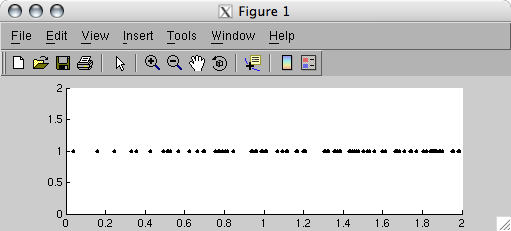
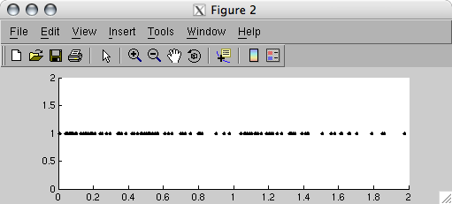
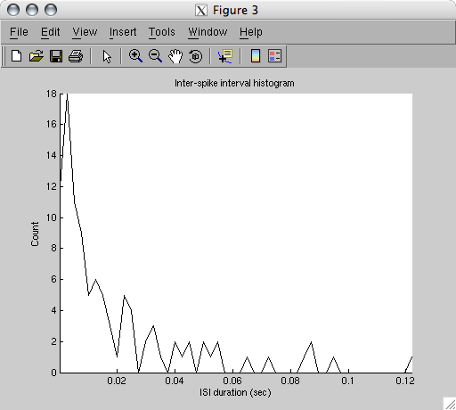

| Spike Toolbox |
|
Spike Toolbox tutorial
 Raster plotsInter-Spike Interval histograms
Raster plotsInter-Spike Interval histograms
Raster plots
STPlotRaster produces raster plots of one or more spike train objects.
<[hFigure]> = STPlotRaster(stTrain)
<[hFigure]> = STPlotRaster(stTrain, <PlotOptions ...>)
<[hFigure]> = STPlotRaster(stTrain, strLevel)
<[hFigure]> = STPlotRaster(stTrain, strLevel, <PlotOptions ...>)
See the STPlotRaster documentation for a detailed description of the arguments. Of course, raster plots require a spike train with either an instance or a mapping. Lets have a look at our poisson-generated spike trains with different frequency profiles:
figure, STPlotRaster(stRising);
figure, STPlotRaster(stFalling);
 
Raster plots have time in seconds along the x-axis and the spike addresses along the y-axis. Since our spike trains are not mapped to any address, they have an address of '1' by default. The degree of randomness in the poisson spike trains is very evident.
Inter-Spike Interval histograms
We can obtain an ISI histogram of our spike trains with the STISIHist function.
[vISIHist, tTimeBins] = STISIHist(stTrain <, bUseLog, nNumBins>)
[vISIHist, tTimeBins] = STISIHist(stTrain <, bUseLog, tTimeBins>)
[mISIHist, tTimeBins] = STISIHist(cellstTrain, ...)
figure, STISIHist(stRising);

|
|
Combining the trains |